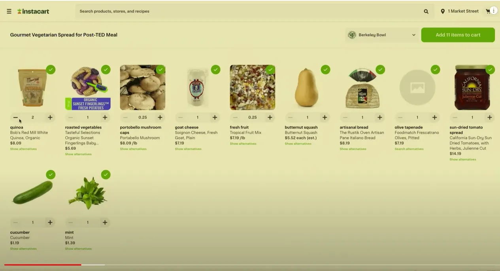
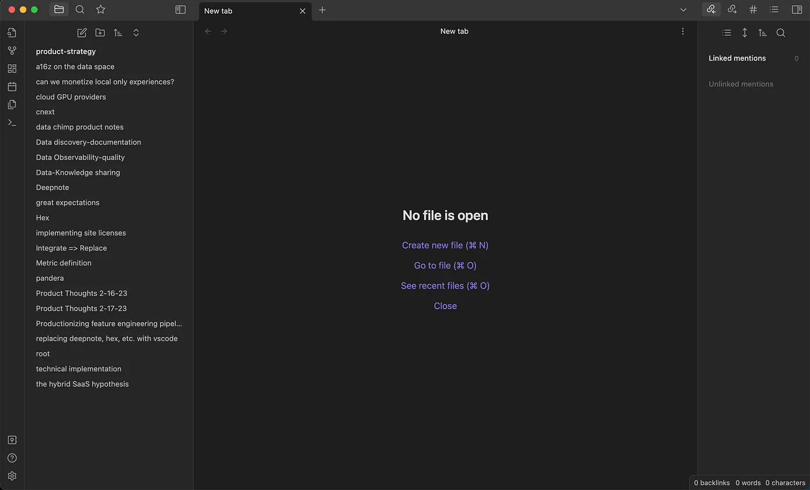

What percentage of traditional UIs will be replaced by chat-based experiences? I’m building a AI/LLM-powered app guide and company that’s betting the percentage is low.
Sci-fi is a part of what guides my intuition here. Jarvis didn’t make GUIs obsolete for Tony Stark. GPT-X won’t make them obsolete for us.
Even if you don’t like sci-fi as a guide for the future, you can see that chat-based UIs won’t dominate it by looking closely at how we use computers today. That’s what we’ll do here: we’ll examine cases where chat-based UIs don’t make sense, no matter how smart the AI chat-bot is. We’ll see that chat-based UIs won’t dominate the future because the cases we examine below represent the overwhelming majority of what we use computers for.
Operating on items in a list
The CEO of OpenAI gave a nice example showing how chat-based interfaces aren’t great for operating on list items in his recent TED talk. First, he shows that ChatGPT can generate a grocery list on Instacart:

Then he says,
…The traditional UI is still very valuable…you can click through it and…modify the actual quantities…I think this shows that traditional UIs are not going away.
In this case, no one prefers to type (or even speak) the words “increase the number of quinoa packets to two.” We just want to tap the plus button on our iPads. The same thing is true any time we’re archiving emails. Swiping away an email to archive it is deeply intuitive to the parts of our brain that evolved before language.
Tasks performed via spatial metaphors
Speaking of swiping away emails, there are many many tasks we perform on computers that leverage our sense of space. Think about Google Calendar:
We know that our schedule is “full” because we see lots of space occupied by boxes. Moreover, when we want to manipulate an event, GCal’s interface gives us a spatial metaphor that makes it extremely natural to “drag an event one day in the future.” We don’t want to type or say, “move the investor week event on Wednesday one day forward.” Again, given that spatial cognition evolved before language, it’s no surprise that spatial metaphors are common and effective in GUIs and that language-based interaction feel less natural when a spatial metaphor is available.
Mutations with invariants
We can re-use the calendar screenshot above for this case: if you can avoid it, you don’t want to double-book your calendar. While chat-based interfaces can refuse to book an event if there’s a conflict, the busier you are, the more you’ll want a GCal-like interface that shows you where you “have room” (notice the spatial metaphor!) in your schedule. Corollary: busy people won’t use ChatGPT to create calendar events, no matter how good the language model is.
Even if you don’t use GCal, invariants helpfully constrain what you can do within software you use every day. Any time you see a required field, for example, the GUI is helpfully saying, “Hey! I can’t do what you want with what you’ve given me.” E.g., I can’t give you a revenue forecast if this deal you’re creating is missing a contract value.
You don’t want to discover what’s needed for your task by arguing back and forth with a chatbot. You want a UI that proactively tells you how to avoid invalid inputs, or, if you prefer the computer-science-esque way of putting it: you want a system that proactively communicates its invariants.
Complex mutations
Watch this video of the Hubspot CTO demoing a chatbot that can add a new Hubspot contact:
Did you notice that he has to stop and think about what additional information he wants to include in the request to create a new contact? That’s a strong sign that the mutation he’s performing is too complicated to do via a chat-interface. Very often when we’re mutating data, we need to know our available options for our mutation. (This is especially if there are invariants involved. See above!)
If you can keep track of the entire mutation and it’s options in your head, great. Use ChatGPT. Otherwise, something like a form is a pretty good surface for simultaneously conveying what’s possible for a mutation and enabling us to the provide information that fully leverages the capabilities of the software we’re using.
Low-intent product exploration
Even outside of mutations, we are often unsure of the capabilities of the software we’re using. When this is true, we don’t have a specific task to delegate to an AI. Instead, we simply want to see what’s possible.
You can ask a chatbot to write out what’s possible, but we lose information when we translate product possibilities into textual descriptions. A particular screen’s layout and the size of its elements contain lots of information about how the software is supposed to be used. (A picture is worth a thousand words.) Moreover, visual design patterns instantly orient us and let us re-use knowledge of how software works.
You can see both of these points at work if you look a screenshot from this piece of software you’ve probably never used (it’s Obisidian):

If you’ve worked with text editors before, when you see this:
- The layout screams “This is a file editor!”
- The tabs design pattern says you can easily jump between multiple files while working.
- The star symbol always means something like “favorite,” so in this context, it’s saying you can mark certain files as important. It’s prominent position tells you the software designers think this will be especially useful.
Again, ChatGPT could have written these things out for us, but we process them faster by simply looking at the GUI. The GUI visually tells us what matters within the software.
High-frequency tasks
There’s a reason so many of us have memorized the Cmd+C shortcut: it takes too damn long to copy text via a mouse. The feeling we have on this generalizes: when we perform a task frequently, we want affordances that help us move at the speed of thought. The proliferation of the “Command K” design pattern and tools like Command Bar are further evidence of this. So is swiping left on Tinder.
Conclusion
If these are all bad use cases for chat-based UI, ChatGPT won’t be as disruptive to how we interact with computers as some have suggested. This is not because of current limitations in ChatGPT or AI. Rather, it’s because — as the best sci-fi reminds us — despite all our technology, we remain human and the human machine works best on spatial and kinetic inputs.